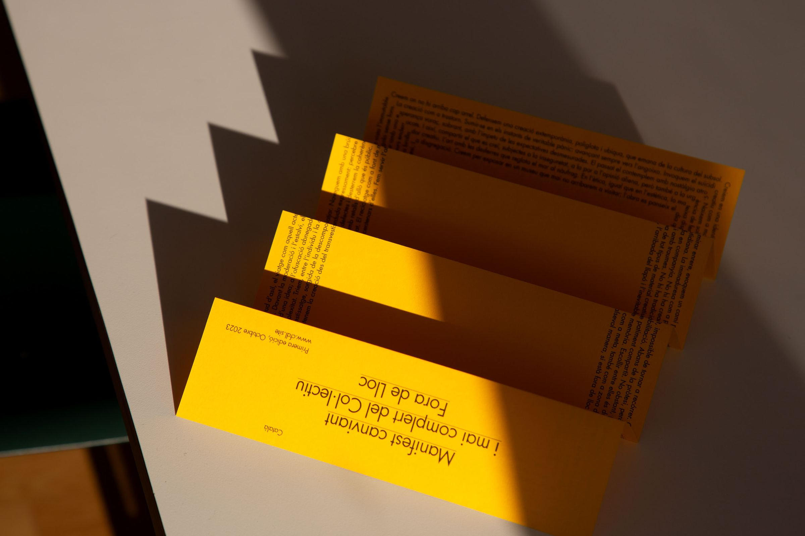
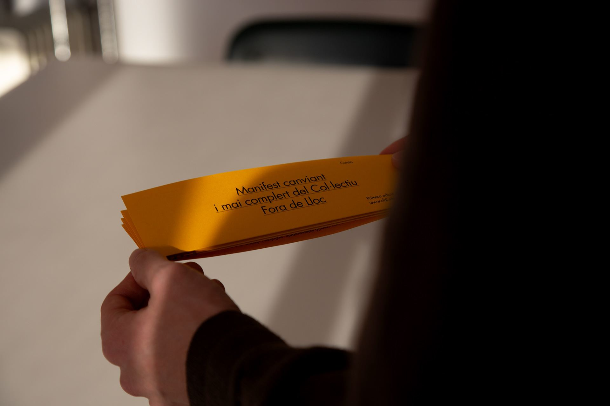

C.F.D.L.
Escogemos un mundo de ciudades recordadas, siempre en construcción, en terrenos donde no deberían estar.
El manifiesto, entero →

Escogemos un mundo de ciudades recordadas, siempre en construcción, en terrenos donde no deberían estar.
El manifiesto, entero →